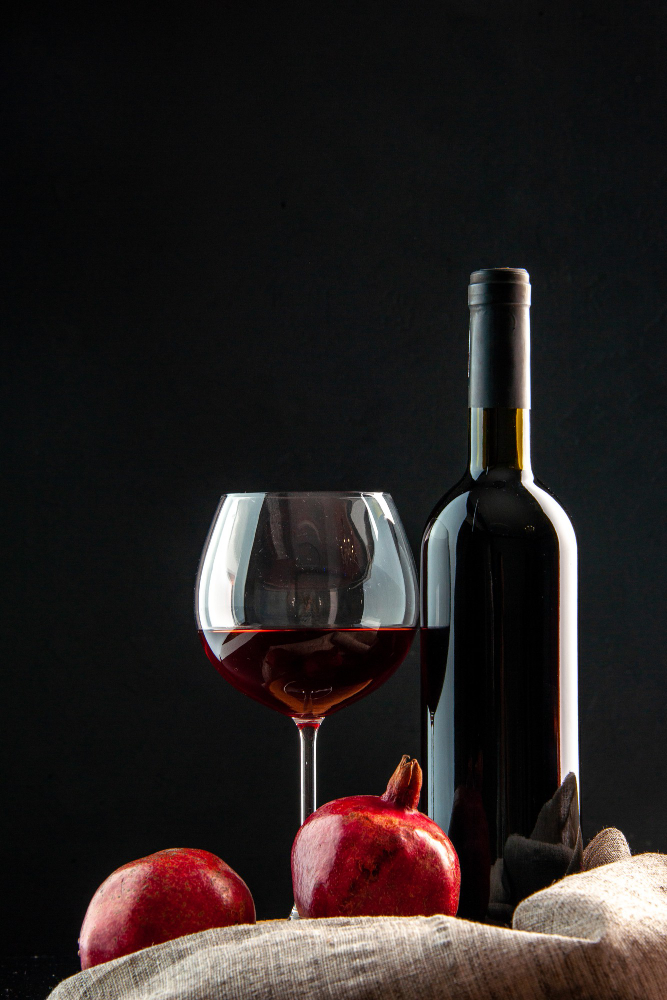

Vinho Tinto

O vinho tinto é uma bebida alcoólica produzida a partir da fermentação de uvas escuras ou vermelhas. Durante o processo de produção, as cascas das uvas são mantidas em contato com o mosto (suco das uvas) por um período determinado, o que confere a cor característica do vinho tinto. O sabor e aroma do vinho tinto podem variar de acordo com a variedade de uva utilizada, a região de produção e o processo de envelhecimento. O vinho tinto é geralmente servido em temperatura ambiente e pode acompanhar uma variedade de pratos, desde que haja harmonização entre os sabores.
Vinho Branco
O vinho branco é uma bebida alcoólica produzida a partir da fermentação de uvas brancas ou de uvas tintas com casca removida. Durante o processo de produção, as cascas das uvas não são mantidas em contato com o mosto (suco das uvas), resultando em uma cor amarelo-palha ou amarelo-esverdeado. O sabor e aroma do vinho branco podem variar de acordo com a variedade de uva utilizada, a região de produção e o processo de envelhecimento. O vinho branco é geralmente servido gelado e pode acompanhar uma variedade de pratos, desde que haja harmonização entre os sabores.
Vinho Rosé
O vinho rosé é uma bebida alcoólica produzida a partir da fermentação de uvas tintas, mas com um período de maceração mais curto, que resulta em uma cor rosada. Durante o processo de produção, as cascas das uvas são mantidas em contato com o mosto (suco das uvas) por um período limitado, o que confere a cor rosada característica do vinho rosé. O sabor e aroma do vinho rosé podem variar de acordo com a variedade de uva utilizada, a região de produção e o processo de envelhecimento. O vinho rosé é geralmente servido gelado e pode acompanhar uma variedade de pratos, desde que haja harmonização entre os sabores.
Vinho Espumante
O vinho espumante é uma bebida alcoólica que passa por uma segunda fermentação dentro da própria garrafa ou em tanques especiais, resultando em uma efervescência (borbulhas) característica. Durante o processo de produção, é adicionado açúcar e leveduras ao vinho base, que é então engarrafado ou colocado em tanques para a fermentação secundária. O tempo de envelhecimento e a variedade de uva utilizada podem afetar o sabor e aroma do vinho espumante. Algumas das variedades mais conhecidas de vinho espumante são o champanhe, produzido na região de Champagne, na França, e o prosecco, produzido na região de Veneto, na Itália. O vinho espumante é geralmente servido gelado e pode ser consumido sozinho ou acompanhando alimentos, como aperitivos, peixes, frutos do mar e sobremesas.